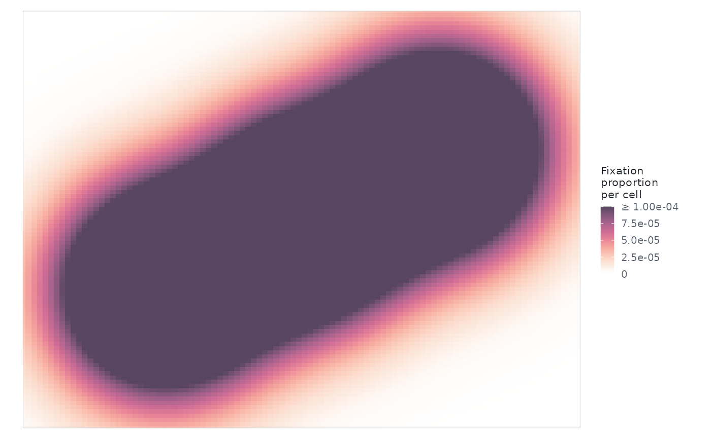

eyesim colour scales
scale_fill_eyesim_density.Rd`scale_fill_eyesim_density()` is the sequential density scale used by the density plots. Opacity is part of the ramp and is anchored at zero density, so zero is transparent (a background stimulus shows through) and the colour bar shows exactly what is drawn. Set shared `limits` to compare conditions on one scale. `scale_colour_eyesim_time()` is the fixation-order/onset scale.
Usage
scale_fill_eyesim_density(
...,
name = "Fixation\ndensity",
limits = c(0, NA),
transparent = TRUE,
aesthetics = "fill"
)
scale_colour_eyesim_time(..., aesthetics = "colour")See also
Other visualization:
anim_scanpath(),
element_text_wrap(),
eyesim_colours(),
plot.eye_density(),
plot.fixation_group(),
theme_eyesim()
Examples
fg <- fixation_group(x = c(100, 200, 300), y = c(100, 150, 200),
onset = c(0, 200, 400), duration = c(200, 200, 200))
ed <- eye_density(fg, sigma = 50, xbounds = c(0, 400), ybounds = c(0, 300))
# Put several maps on one scale by giving them the same limits
plot(ed, limits = c(0, 1e-4))
